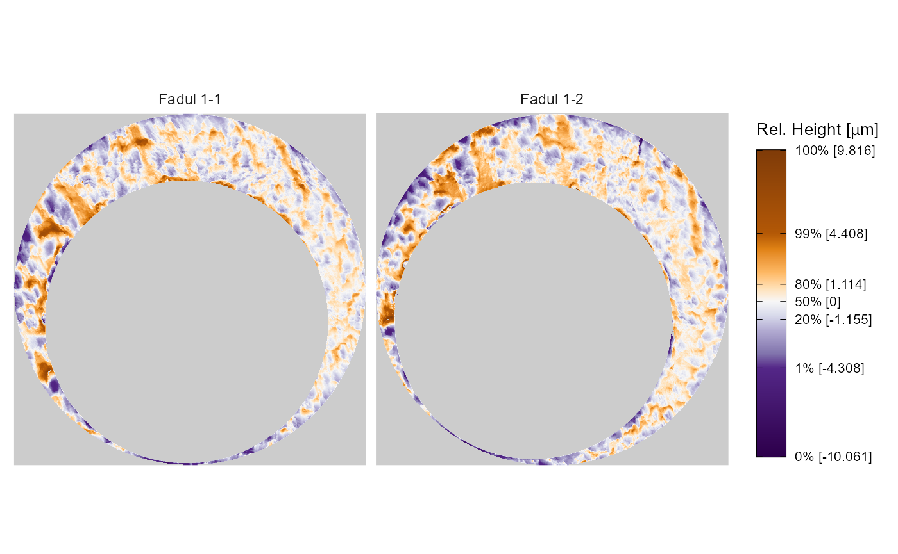

Reproduction of Tong et al. (2018) plots using the cmcR package
cmcR_plotReproduction.Rmd#> Warning: package 'ggplot2' was built under R version 3.6.3
#> Warning: package 'tibble' was built under R version 3.6.3
#> Warning: package 'tidyr' was built under R version 3.6.3
#> Warning: package 'purrr' was built under R version 3.6.3
#> Warning: package 'dplyr' was built under R version 3.6.3
#> Warning: package 'forcats' was built under R version 3.6.3TODO: - Add hyperlinks to .png images of original plots
This vignette will give R code to reproduce (at least qualitatively if not precisely) plots in Tong et al. (2018) using the cmcR package.
Set-up
For the sake of an example we will consider 3 cartridge cases are from Fadul et al. (2011). The data are openly available from the NIST Ballistics Toolmark Research Database. Specifically, we will consider the comparisons between “Fadul 1-1” and “Fadul 1-2” (available here) and “Fadul 2-1” (available here). Note that Fadul 1-1 and Fadul 1-2 are known to have been fired from the same firearm while Fadul 2-1 was fired from a different firearm.
Figure 1.1
The following code saves a 2D representation of the cartridge case surface as a .png file using the x3ptools::image_x3p function in a directory called bfScanImages. The magick package is then used to read and plot these saved images.
if(!dir.exists("bfScanImages")){ dir.create("bfScanImages") } x3ptools::read_x3p("https://tsapps.nist.gov/NRBTD/Studies/CartridgeMeasurement/DownloadMeasurement/2d9cc51f-6f66-40a0-973a-a9292dbee36d") %>% x3ptools::image_x3p(file = "bfScanImages/fadul1-1.png",col = "#FCFCFC",zoom = .7,size = c(300,300)) x3ptools::read_x3p("https://tsapps.nist.gov/NRBTD/Studies/CartridgeMeasurement/DownloadMeasurement/cb296c98-39f5-46eb-abff-320a2f5568e8") %>% x3ptools::image_x3p(file = "bfScanImages/fadul1-2.png",col = "#FCFCFC",zoom = .7,size = c(300,300)) magick::image_append(c(magick::image_read("bfScanImages/fadul1-1.png"), magick::image_read("bfScanImages/fadul1-2.png"))) %>% magick::image_extent(geometry = "600x350",gravity = "South") %>% magick::image_annotate("Fadul 1-1",size = 30,location = "+80") %>% magick::image_annotate("Fadul 1-2",size = 30,location = "+380") %>% plot()
fadul1.1 <- cmcR::selectBFImpression_sample_x3p("https://tsapps.nist.gov/NRBTD/Studies/CartridgeMeasurement/DownloadMeasurement/2d9cc51f-6f66-40a0-973a-a9292dbee36d") fadul1.2 <- cmcR::selectBFImpression_sample_x3p("https://tsapps.nist.gov/NRBTD/Studies/CartridgeMeasurement/DownloadMeasurement/cb296c98-39f5-46eb-abff-320a2f5568e8") fadul2.1 <- cmcR::selectBFImpression_sample_x3p("https://tsapps.nist.gov/NRBTD/Studies/CartridgeMeasurement/DownloadMeasurement/8ae0b86d-210a-41fd-ad75-8212f9522f96")
fadul1.1$x3p %>% x3p_to_df() %>% ggplot(aes(x = x,y = y)) + geom_raster(aes(fill = value)) + scale_fill_gradient2(low = "#1a6bff", mid = "grey75", high = "#ffae1a", midpoint = median(as.vector(fadul1.1$x3p$surface.matrix), na.rm = TRUE), na.value = "white") + theme_bw() + coord_fixed(expand = FALSE)

kmComparison <- cmcR::cellCCF_bothDirections(x3p1 = fadul1.1$x3p, x3p2 = fadul1.2$x3p, cellNumHoriz = 7, minObservedProp = .1, regionToCellProp = 9) knmComparison <- cmcR::cellCCF_bothDirections(x3p1 = fadul1.1$x3p, x3p2 = fadul2.1$x3p, cellNumHoriz = 7, minObservedProp = .1, regionToCellProp = 9) kmCMC <- cmcR::cmcFilter_improved(kmComparison, ccf_thresh = .5, dx_thresh = 20, theta_thresh = 6) knmCMC <- cmcR::cmcFilter_improved(knmComparison, ccf_thresh = .5, dx_thresh = 20, theta_thresh = 6)
Figure 4
kmPlts <- cmcR::cmcPlot(x3p1 = fadul1.1$x3p, x3p2 = fadul1.2$x3p, cellCCF_bothDirections_output = kmComparison, cmcFilter_improved_output = kmCMC) gridExtra::grid.arrange(kmPlts$finalCMC)

kmPlts$finalCMC$grobs[[1]] %>% plot()
kmPlts$finalCMC$grobs[[2]] %>% plot()
knmPlts <- cmcR::cmcPlot(x3p1 = fadul1.1$x3p, x3p2 = fadul2.1$x3p, cellCCF_bothDirections_output = knmComparison, cmcFilter_improved_output = knmCMC) gridExtra::grid.arrange(knmPlts$initialCMC)

kmCellRegionPairs <- cmcR::getCellRegionPairs(fadul1.1$x3p,fadul1.2$x3p,ccfDF = kmCMC$finalCMCs,params = kmComparison$comparison_1to2$params) ccfMapPlot(mat1 = kmCellRegionPairs$`21`$`x = 1 - 83,y = 414 - 496`[[1]], mat2 = kmCellRegionPairs$`21`$`x = 1 - 83,y = 414 - 496`[[2]], type = "raster")

ccfMapPlot(mat1 = kmCellRegionPairs$`21`$`x = 1 - 83,y = 414 - 496`[[1]], mat2 = kmCellRegionPairs$`21`$`x = 1 - 83,y = 414 - 496`[[2]], type = "contour")
References
Song, J. (2013). Proposed “NIST Ballistics Identification System (NBIS)” Based on 3D Topogra-phy Measurements on Correlation Cells.American Firearm and Tool Mark Examiners Journal,45(2):11.
Tong, M., Song, J., and Chu, W. (2015). An Improved Algorithm of Congruent Matching Cells(CMC) Method for Firearm Evidence Identifications.Journal of Research of the National Institute of Standards and Technology, 120:102.
Fadul T., Hernandez G., Stoiloff S. and Gulati Sneh “An Empirical Study to Improve the Scientific Foundation of Forensic Firearm and Tool Mark Identification Utilizing 10 Consecutively Manufactured Slides,” 2011 NCJRS 237960